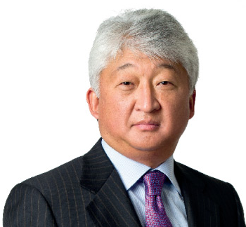
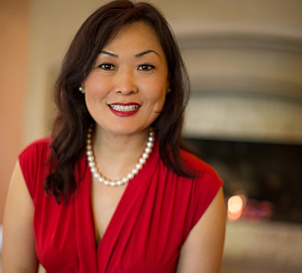
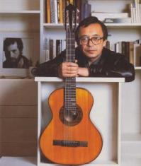
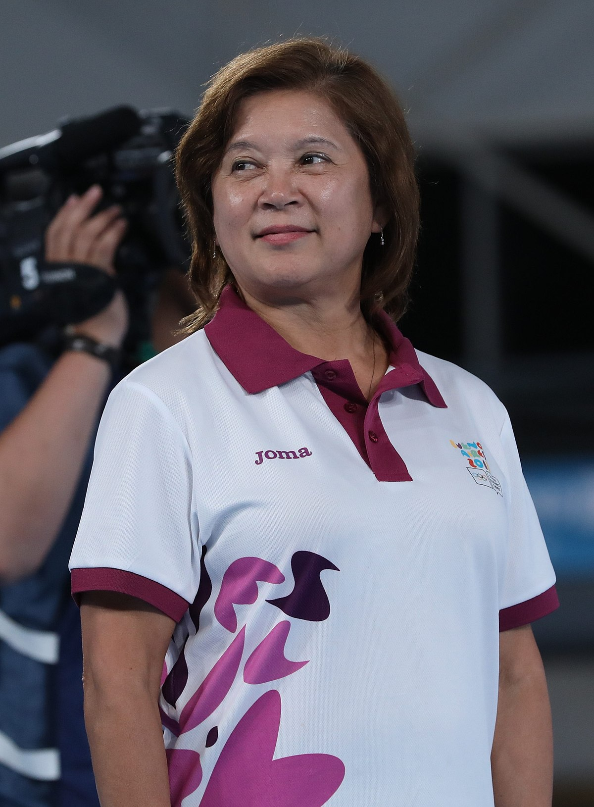
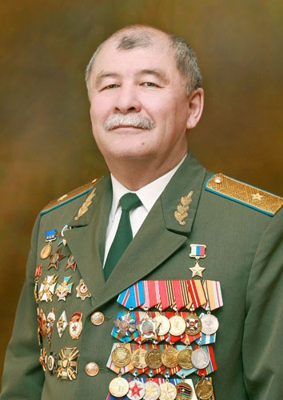

Famous Koryo Saram

Vladimir Kim
Kazakhstani Businessman and Billionaire

Svetlana Kim
Speaker, Business Consultant, and Award Winning Author

Yuliy Chersanovich Kim
Legendary Russian Musician

Viktor Tsoi
Leader of Kino and Pioneer of Russian Rock

Nellie Kim
Gold Medal Gymnast

Эм Юрий Павлович
Major General, Hero of the Russian Federation